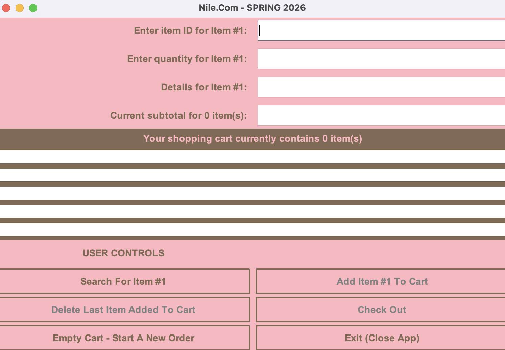

Java GUI E-Store Project
Project Illustration
Description
This project involved developing a standalone Java application that simulates an online e-store using event-driven programming principles. The application allows users to select in-stock items, add them to a shopping cart, calculate totals including tax, generate an invoice, and log transactions to an output file. The system reads inventory data from a CSV file and appends completed transactions to a separate CSV log for record-keeping.
Skills Learned
- Applied event-driven programming using Java-based graphical user interfaces
- Designed interactive user interfaces for an e-store application
- Worked with CSV files for data input and transaction logging
- Practiced validating user input and managing application state across multiple user actions